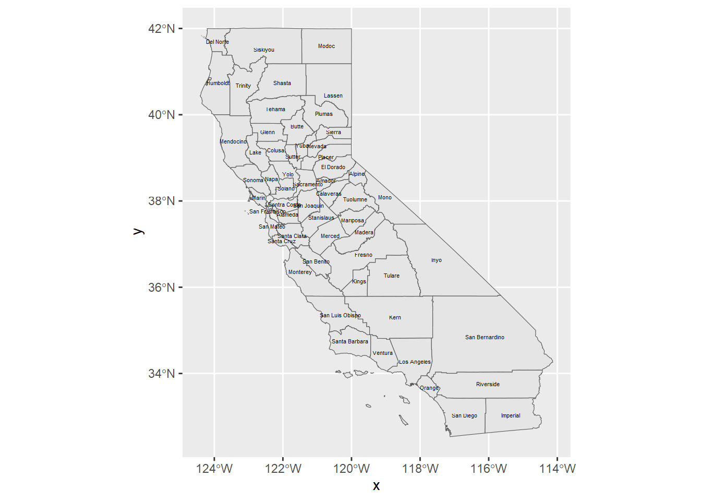

11 Figures and Tables
This document demonstrates methods for creating figures and tables suitable for producing nice-looking reports. There are many other resources on this, with probably the most comprehensive being Xie, Allaire, Grolemund (2023). R Markdown: The Definitive Guide. https://bookdown.org/yihui/rmarkdown/. See section 2.6 “R code chunks and inline R code”. This document provides a short introduction to these, but the Definitive Guide goes further. Another source, Xie (2023), bookdown: Authoring Books and Technical Documents with R Markdown https://bookdown.org/yihui/bookdown/, gets into building chapters, indices, and publishing on bookdown.org.
Note that the methods you use will differ somewhat depending on whether you’re outputing to HTML or pdf, and it was a challenge for me figuring out how to do both for the same figure or table.
11.1 Figures
You already know how to create figures in R Markdown, simply by creating graphics in code chunks. To make them more useful as a report, you can add a figure heading and cite the figure in the text. To create the figure heading, assign it in the code chunk header to fig.cap. To cite it in text use an inline reference like this: (Figure 11.1).
library(igisci); library(ggplot2)
ggplot(CA_counties) + geom_sf() +
geom_sf_text(aes(label = NAME), size = 1.5)
FIGURE 11.1: California Counties
11.2 Tables
There are lots of ways of creating tables in R, some of which are discussed in the book. A recent package from the RStudio/Posit folks is gt, worth exploring at https://cloud.r-project.org/web/packages/gt/gt.pdf or https://gt.rstudio.com.
11.2.1 DT::datatable
Here’s a table created with the DT package, demonstrating a scroll option useful for interactive documents (HTML).
11.2.2 knitr::kable tables
The knitr package that RStudio uses to knit documents from R markdown also has a table format function kable which has some good options for pdf.
| species | island | bill_length_mm | bill_depth_mm | flipper_length_mm | body_mass_g | sex | year |
|---|---|---|---|---|---|---|---|
| Adelie | Torgersen | 39.1 | 18.7 | 181 | 3750 | male | 2007 |
| Adelie | Torgersen | 39.5 | 17.4 | 186 | 3800 | female | 2007 |
| Adelie | Torgersen | 40.3 | 18.0 | 195 | 3250 | female | 2007 |
| Adelie | Torgersen | NA | NA | NA | NA | NA | 2007 |
| Adelie | Torgersen | 36.7 | 19.3 | 193 | 3450 | female | 2007 |
| Adelie | Torgersen | 39.3 | 20.6 | 190 | 3650 | male | 2007 |
11.2.3 gt package
Here’s a table created with the gt package. See the documentation at https://gt.rstudio.com.
gt(head(penguins)) |>
tab_header(title="Palmer Penguins",
subtitle="examples of data (first 6 shown)") |>
tab_footnote("Source: https://allisonhorst.github.io/palmerpenguins/articles/intro.html")| Palmer Penguins | |||||||
| examples of data (first 6 shown) | |||||||
| species | island | bill_length_mm | bill_depth_mm | flipper_length_mm | body_mass_g | sex | year |
|---|---|---|---|---|---|---|---|
| Adelie | Torgersen | 39.1 | 18.7 | 181 | 3750 | male | 2007 |
| Adelie | Torgersen | 39.5 | 17.4 | 186 | 3800 | female | 2007 |
| Adelie | Torgersen | 40.3 | 18.0 | 195 | 3250 | female | 2007 |
| Adelie | Torgersen | NA | NA | NA | NA | NA | 2007 |
| Adelie | Torgersen | 36.7 | 19.3 | 193 | 3450 | female | 2007 |
| Adelie | Torgersen | 39.3 | 20.6 | 190 | 3650 | male | 2007 |
| Source: https://allisonhorst.github.io/palmerpenguins/articles/intro.html | |||||||
11.3 Other tricks
It’s often useful to include options for the code chunks at the top of the document. To not show this, you can use echo=F in the code chunk header.
knitr::opts_chunk$set(include=T,echo=T,fig.show=T,warning=F,message=F,fig.align='center',out.width="75%")You can also use various of these parameters in any individual code chunk header. For instance, you may not actually want to set warning messages to FALSE for the whole document, because some of those warnings may be useful to see as you’re working on things. So what you might want to do is set warning=F in an individual code chunk once you have it working! The same can apply to messages; I often set message=F for individual code chunks that produce messages I don’t care to see. Some of the other settings are handy for hiding code while still running it with echo=F.